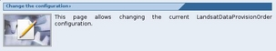

To change the configuration of the selected service click on the "Change the configuration" section link in the Service configuration page.

The browser should display a form filled with the current service configuration parameters.
The
first section allows you to redefine the service general information
like its abstract and its description. Both are free text fields.
The second section contains the specification of the schema set
associated to the service. A checkbox allows the user to enable or
disable the validation of all incoming and outcoming SOAP messages
(except for those sent through the SoapCall tag). Beneath this checkbox
a list of schema is provided in order to allow the update of the
content of such files. This task is usually required when the service
exposes an SSE compliant interface. In order to updare a schema file,
click on the "Browse" button on the right of it and select the upgraded
version from the local filesystem. The file will be updated as sooon
as the "Configure button" is clicked. On the left of each schema
file a radio box is placed. The user shall select the radio button on
the left of the main schema in order to allow Toolbox properly handle
the validation task. This information si taken into account only when
the validation is enabled, but it is recommended to always take care of
it in order to avoid mistakes.
The following two sections will allow you to change those settings inserted during the service creation. For a detailed description of these, please go here.